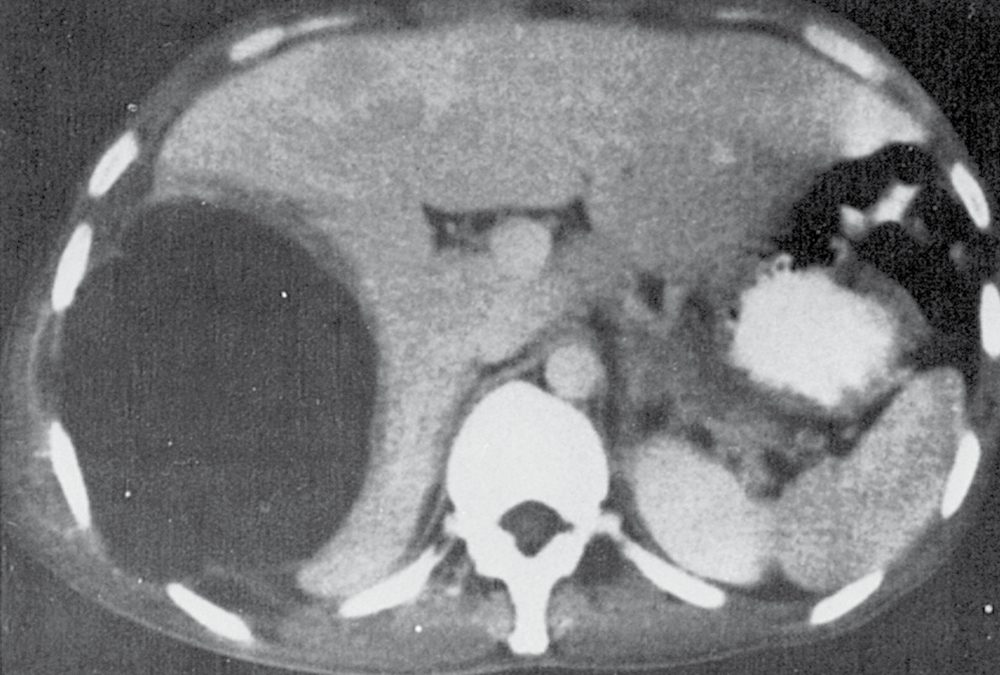
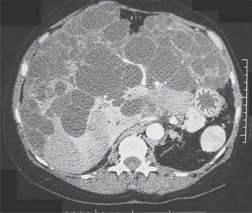
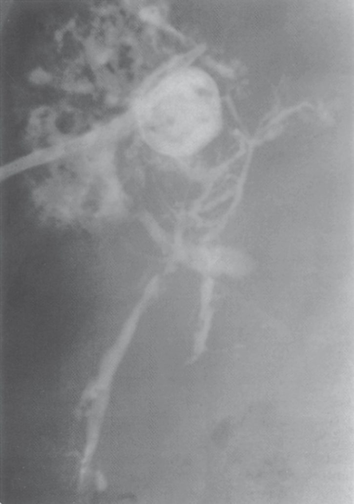
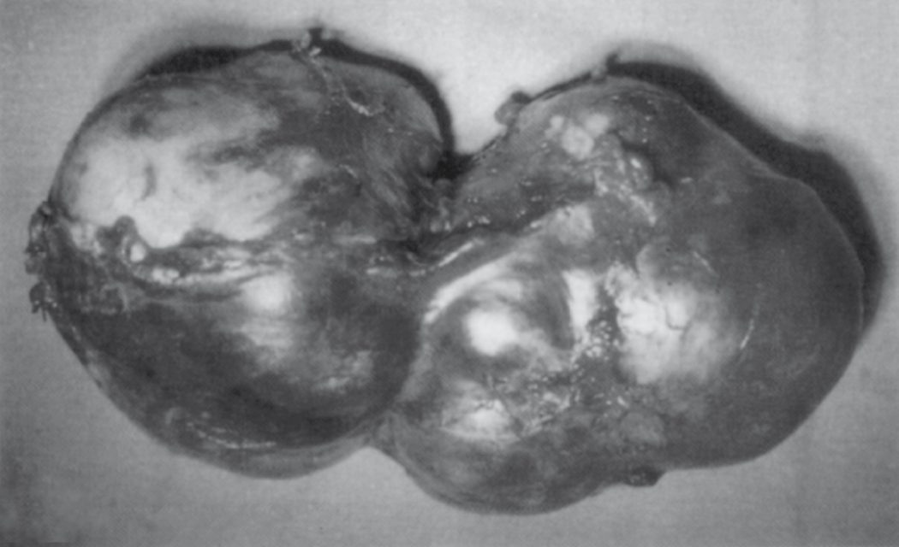

Liver Abscess and Cysts
Summary
- Hepatic space-occupying lesions of infective or cystic origin include pyogenic abscess, amoebic abscess, hydatid (echinococcal) cyst, and simple or polycystic non-infective cysts.
- Pyogenic liver abscess is now most often related to biliary tract disease or is cryptogenic, occurring in patients in their 50s–60s, and is the most common type of liver abscess in the United States [1][2].
- Amoebic abscess occurs in a distinct demographic (young males from endemic areas) and is treated medically, whereas hydatid disease usually requires surgical management with strict precautions against intraoperative spillage [1].
- The full differential diagnosis of a cystic lesion of the liver is wider still, spanning bilomas, abscesses, parasitic disease, simple cysts, polycystic liver disease, biliary cystadenoma and cystadenocarcinoma [3].
- NICE has no guideline on liver abscess and none on hepatic cysts.
- A search of NICE guidance returns nothing on pyogenic or amoebic liver abscess, nothing on hydatid disease of the liver, and nothing on simple or polycystic liver disease; the only items indexed under those searches concern hepatocellular carcinoma ablation and unrelated conditions.
- This is a genuine gap rather than an oversight in this page, and it is worth knowing that the management described below rests on textbook and international consensus rather than on UK national guidance.
What NICE does provide is the sepsis pathway that a patient with a pyogenic liver abscess enters, and it contains one recommendation that speaks directly to the surgical decision. Involve the relevant surgical team early on if surgical or radiological intervention is suitable for the source of infection; the surgical team or interventional radiologist should seek senior advice about the timing of intervention, and carry the intervention out as soon as possible in line with the advice received [4].
- Two earlier steps in the same section matter for the patient in whom the abscess has not yet been found.
- Tailor investigations of the source of infection to the person's clinical history and examination findings, and consider imaging of the abdomen and pelvis if no likely source of infection is identified after clinical examination and initial tests [4], which is how an occult liver abscess is most often discovered in a septic patient.
- On antibiotics, where the source of infection is confirmed or microbiological results are available, review the choice of antibiotic and change it according to results, using a narrower-spectrum antibiotic if appropriate; for anyone with suspected sepsis and a clear source, use existing local antimicrobial guidance [4].
Definition
- A pyogenic liver abscess is a bacterial infection of the liver parenchyma resulting in an organised, pus-filled cavity, occurring when a bacterial inoculum exceeds the liver's clearance capacity [1].
- An amoebic liver abscess is a cavity of liquefactive hepatic necrosis caused by Entamoeba histolytica trophozoites reaching the liver via the portal venous system after colonic invasion [1].
- A hydatid cyst is the larval (metacestode) stage of the tapeworm Echinococcus, most commonly E. granulosus, encysted within the liver of an accidental intermediate host [1].
- A simple hepatic cyst is a congenital, serous fluid-filled cyst lined by a single layer of cuboidal/columnar epithelium that does not communicate with the biliary tree [1].
Pathophysiology
- The liver is chronically exposed to portal venous bacteria and normally clears this load; a pyogenic abscess develops when an inoculum overwhelms this clearance, causing tissue invasion, neutrophil infiltration and abscess formation [1].
- Kupffer cells act as the filter, and abscesses occur when hepatic clearance mechanisms fail or are overwhelmed; parenchymal necrosis and haematoma from trauma, obstructive biliary processes, ischaemia and malignancy all promote invasion by micro-organisms [3].
- Bacteria reach the liver via the biliary tree (ascending cholangitis from stone or malignant obstruction, now, with cryptogenic cases, the most common identifiable route), the portal vein (pylephlebitis from appendicitis, diverticulitis, or other intra-abdominal sepsis), the hepatic artery (systemic bacteraemia), direct extension (e.g. from suppurative cholecystitis or a subphrenic abscess), or trauma [1].
- Most abscesses (75%) involve the right hemiliver, postulated to reflect preferential laminar portal blood flow; approximately 50% are solitary, and up to 40–60% are polymicrobial, with anaerobes implicated in 40–60% of cases; the most common organisms are E. coli and Klebsiella pneumoniae [1][2].
The six sources, and how the source predicts the abscess
Source control is required to treat the abscess, and six distinct source categories are recognised: the bile ducts causing ascending cholangitis; the portal vein causing pylephlebitis from appendicitis or diverticulitis; direct extension from contiguous disease; trauma, blunt or penetrating; the hepatic artery in septicaemia; and cryptogenic [3].
| Source | Share of pyogenic abscesses and features |
|---|---|
| Biliary | 35% to 40% of all pyogenic liver abscesses; 40% of these are related to an underlying malignancy; obstruction is the norm and cholangitis is present in up to half. Intrahepatic stones and stricture predominate in Eastern series, malignant obstruction in the West |
| Intestinal (portal) | 20% of all pyogenic liver abscesses. In the preantibiotic era 43% of Ochsner's 622 patients seeded the liver by this route with appendicitis the commonest source (34%); today appendicitis accounts for only 2%, with diverticulitis, perforated colon cancers and other abdominopelvic abscesses now the common causes |
| Arterial | Approximately 12%; mostly intravenous drug use, but also hepatic artery chemoembolisation or particle embolisation and umbilical artery catheterisation, plus distant infection in heart, lungs, kidneys, bones, ears and teeth |
| Cryptogenic | 10% to 45% depending on the aggressiveness of investigation; these patients usually have diabetes, immunosuppression or malignancy, and their abscesses tend to be solitary and to contain a single anaerobe |
- Table reformats the reported aetiological distribution [3].
- Any manipulation of the biliary tree, cholangiography, percutaneous transhepatic stents, endoscopic stents, biliary-enteric anastomoses, predisposes to cholangitis and abscess, and malignancy potentiates the whole process through poor nutrition and immunosuppression [3].
- Abscess formation complicates fewer than 5% of hepatic transarterial embolisations and fewer than 1% of tumour ablations [3].
- The source predicts the anatomy.
- Portal, traumatic and cryptogenic abscesses are generally solitary and large, whereas biliary and arterial abscesses are multiple and small; 63% of patients have right lobe abscesses, 14% left lobe and 22% bilobar, with bilateral disease in up to 90% of those with an arterial or biliary source, while intra-abdominal infections favour the right lobe because of preferential flow from the superior mesenteric vein.
- Fungal abscesses are usually multiple, bilateral and miliary [3].
- Amoebic abscess results from ingestion of E. histolytica cysts, which release trophozoites in the intestine; these invade the colonic mucosa and reach the liver via the portal vein, where enzymatic lysis produces liquefactive necrosis with a classic "anchovy sauce" appearance of blood and necrotic liver tissue, contained by the relatively resistant Glisson capsule [1].
- Three amoebic species mainly infect humans: Entamoeba dispar is associated with an asymptomatic carrier state and not with disease, Entamoeba moshkovskii with mild gastrointestinal discomfort, and only E. histolytica causes invasive disease [3].
- The cyst passes through the stomach unscathed, pancreatic enzymes digest the outer cyst wall, and the released trophozoite multiplies in the intestine; normally no invasion occurs and the patient develops amoebic dysentery or becomes an asymptomatic carrier, but in a small number the trophozoite invades the mucosa, travels through the mesenteric lymphatics and veins, and accumulates in the hepatic parenchyma [3].
Hydatid disease follows ingestion of Echinococcus ova shed in canine faeces; the released oncosphere penetrates the duodenal mucosa, enters the bloodstream, and lodges most often in the liver, where it develops into a hydatid cyst with a pericyst (host fibrous capsule) surrounding a two-layered cyst wall (outer ectocyst, inner germinal endocyst); brood capsules within the germinal layer generate scoleces, which together with freed brood capsules form "hydatid sand," and daughter cysts are true replicas of the mother cyst [1]. Humans are accidental intermediate hosts, while animals can be both intermediate and definitive hosts [3].
Simple hepatic cysts are thought to be congenital malformations, lined by a single layer of epithelium without atypia, and do not communicate with the biliary tree [1]. Polycystic liver disease occurs in the setting of autosomal dominant polycystic kidney disease (PKD1, PKD2 mutations); liver cysts are always preceded by kidney cysts and increase in prevalence with age (0% under 20 years, 80% over 60 years), and despite numerous cysts, hepatic parenchyma and function are usually preserved [1]. It is the most frequent extrarenal manifestation of autosomal dominant polycystic kidney disease, found in association with polycystic renal disease in 40% of cases, but also exists in an autosomal dominant pattern not associated with polycystic kidneys; the cysts are epithelial-lined growths arising from biliary epithelium that usually do not communicate with the biliary tree [3].
Clinical features
- The classic triad of fever, jaundice and right-upper-quadrant pain occurs in only about 10% of pyogenic abscess patients; more commonly, fever, chills and abdominal pain predominate, alongside non-specific malaise, anorexia and vomiting [1][3].
- Jaundice occurs in roughly 20–25% and generally reflects underlying biliary disease [1].
- Diaphragmatic irritation may cause cough or dyspnoea; rare cases present with peritonitis from rupture [1].
- A rare but serious complication of Klebsiella hepatic abscess is endogenous endophthalmitis (~3% of cases, more common in diabetics) [1].
Frequency of findings in pyogenic abscess
The clinical presentation is usually subacute and non-specific, which delays presentation, diagnosis and treatment [3].
| Finding | Frequency |
|---|---|
| Fever | 92% |
| Liver tenderness | 65% |
| Jaundice | 54% |
| Abdominal pain | 50%, of whom only half have right-upper-quadrant pain |
| Hepatomegaly | 48% |
| Diarrhoea | Less than 10% |
| Classic triad of fever, jaundice and right upper quadrant tenderness | Less than 10% |
Table reformats the reported presenting features [3]. Laboratory findings are similarly non-specific: leukocytosis in 70% to 90%, raised alkaline phosphatase in 80%, raised bilirubin and transaminases in 50% to 67%, and anaemia, hypoalbuminaemia and prolonged prothrombin time in 60% to 75% [3].
Amoebic abscess typically presents in a man 20–40 years old with recent travel to (or origin from) an endemic area, fever, chills, anorexia, right-upper-quadrant pain and hepatomegaly, over a course of days to 4 weeks; diarrhoea occurs in only about 25% despite obligate colonic infection [1].
Hydatid cysts are largely asymptomatic until complications occur; when symptomatic, abdominal pain, dyspepsia, vomiting and hepatomegaly predominate, with jaundice and fever each present in around 8% of patients; rupture into the biliary tree, bronchial tree, or peritoneal/pleural/pericardial cavities can occur, and free rupture may cause disseminated echinococcosis or fatal anaphylaxis [1]. Presentation may also include urticaria (an allergic manifestation of cyst leakage) [5].
Simple hepatic cysts and polycystic liver disease are usually asymptomatic incidental findings; large cysts may cause abdominal pain, distension, and early satiety, and intracystic bleeding is the most common complication of simple cysts [1]. In polycystic disease, 80% to 95% of simple cysts remain asymptomatic, and where polycystic disease does become symptomatic the cause is usually hepatomegaly, producing abdominal fullness, distension and pain or bowel and biliary obstruction; bleeding, infection, rupture, portal hypertension and Budd-Chiari syndrome are reported but rare, malignant transformation is infrequent, and because hepatic function is typically preserved progression to liver failure is uncommon, prognosis relating instead to the severity of the accompanying renal disease [3].
Etiology
- Comorbid conditions associated with pyogenic abscess include cirrhosis, diabetes, chronic renal failure and a history of malignancy [1].
- Maingot's adds pancreatitis, inflammatory bowel disease, pyelonephritis and peptic ulcer disease, and notes that solid organ cancers along with lymphoma and leukaemia are present in 17% to 36% of patients with liver abscesses [3].
- In children, pyogenic abscess tends to occur with host-defence abnormalities or immune disorders (complement deficiencies, chronic granulomatous disease, leukaemia and other malignancies) and hepatic abscesses are also seen in sickle cell anaemia, congenital hepatic fibrosis, polycystic liver disease and after liver transplantation [3].
A disease that has changed its demographic
- Incidence has risen from 5 to 13 per 100,000 admissions before 1970 to approximately 15 per 100,000 today, with one series reporting 22 per 100,000, attributed to more aggressive management of hepatobiliary and pancreatic cancers together with major improvements in diagnostic imaging [3].
- The age of patients has risen since Ochsner's 1938 description, and it is now a disease of the middle-aged and elderly with a mean age of 47 to 65 years. Older patients are more likely to have a biliary aetiology or underlying malignancy, whereas younger patients are more likely to be alcoholic males with a cryptogenic origin.
- Polymicrobial or anaerobic infection with multidrug-resistant organisms, pleural effusion, inappropriate initial antibiotic selection and greater severity of illness on admission all occur more often in older patients, and in them the case-fatality rate relates to host condition rather than to the abscess itself, so an aggressive approach is warranted where an older patient responds poorly to primary treatment [3].
- Amoebiasis is endemic in Mexico, India, Africa, and parts of Central and South America, and disproportionately affects young males (>10:1 male-to-female ratio), with heavy alcohol use and impaired host immunity (including HIV) increasing susceptibility; menstruating women appear relatively protected, an effect abrogated by pregnancy [1].
- Worldwide an estimated 500 million people carry E. histolytica or E. dispar, 50 million have active disease, and 50,000 to 100,000 die annually; amoebiasis follows a bimodal age distribution with one peak at 2 to 3 years carrying a 20% case-fatality rate and a second above 40 years carrying a 70% case-fatality rate, and low socioeconomic status and unsanitary conditions are significant independent risk factors [3].
- Amoebic liver abscess is the most common extraintestinal form of invasive amoebiasis [3].
- Hydatid disease is endemic in sheep-raising areas, the Mediterranean, Middle East, Far East, South America, Australia, New Zealand and East Africa, where dogs are the definitive host and sheep the usual intermediate host [1][5].
- Neoplastic cysts occur less commonly than simple cysts, usually in females in the fifth decade, and their aetiology is unknown [3].
Diagnosis
- Ultrasound and CT are the mainstays for hepatic abscess diagnosis.
- Pyogenic abscesses appear as round/oval hypoechoic (ultrasound) or hypodense with peripheral enhancement (CT) lesions, occasionally with gas indicating a gas-forming organism; ultrasound sensitivity is 80–95%, CT sensitivity 95–100% [1][2][3].
- Ultrasound distinguishes solid from cystic lesions and is cost-effective and portable, but has limited utility in the morbidly obese and for lesions under the ribs or in an inhomogeneous liver; CT detects lesions down to around 0.5 cm and is not limited by rib shadowing or air [3].
- Plain films are abnormal in 50% of patients, showing an elevated right hemidiaphragm, right pleural effusion or right lower lobe atelectasis on the chest film, and hepatomegaly, air-fluid levels with gas-forming organisms, or portal venous gas where pylephlebitis is the source on the abdominal film [3].
- Blood cultures are positive in roughly 50–60% of pyogenic abscess cases, while abscess cultures are positive in 80% to 97% [1][3].
Microbiology, and what the organism tells you about the source
- Escherichia coli, Klebsiella species, enterococci and Pseudomonas are the commonest aerobes, and Bacteroides species, anaerobic streptococci and Fusobacterium the commonest anaerobes [3].
- The species maps onto the source: the biliary tree yields predominantly E. coli and Klebsiella; intestinal-tract abscesses yield E. coli, enterococci and anaerobes; and anaerobes are the usual organisms in cryptogenic abscesses in Western countries [3].
- Negative cultures may reflect poor anaerobic technique or antibiotics given before drainage, where careful attention is paid to anaerobic recovery, anaerobes are detected in 10% to 17%, most often Bacteroides fragilis, and repeatedly negative bacterial cultures should raise the possibility of amoebic or parasitic organisms, which routine staining and culture do not identify [3].
- Increased use of indwelling biliary stents has raised the incidence of Klebsiella, streptococcal, staphylococcal and pseudomonal species, and fungi rose from 1% of cultures in 1952–1972 to 22% in 1973–1993, attributed to broad-spectrum antibiotic use in treating cholangitis [3].
- Klebsiella pneumoniae liver abscess is a distinct clinical entity.
- It is the number one pathogen in Taiwan and Korea, usually monobacterial rather than mixed; the K1 antigen serotype accounts for 60% of the strains causing liver abscess there and is rarely found in Western isolates.
- Average age at presentation is 55 to 60 years, it is twice as common in men, and it is much more often cryptogenic (64%).
- Diabetes is a known risk factor for developing it and a significant risk factor for its embolic complications, especially endophthalmitis [3].
- Distinguishing pyogenic from amoebic abscess is clinically important: amoebic abscess favours young (20–40 year old) males with travel history, a strong male predominance (≥10:1), uncommon diabetes and jaundice, negative blood cultures, and positive amoebic serology (sensitivity 90–99% by enzyme immunoassay); pyogenic abscess favours patients over 50, with more common diabetes and jaundice, positive blood cultures, and negative amoebic serology [1][2].
- On ultrasound, amoebic abscesses classically abut the liver capsule with poor rim definition and internal echoes [1].
- Diagnostic aspiration yielding "anchovy sauce" fluid supports amoebic abscess, though aspiration is diagnostic in only 10–20% of amoebic cases and should be avoided when hydatid disease is a possibility [1].
Diagnosing amoebic abscess without aspirating it
- Serum antibodies are positive in 85% of patients with invasive colitis and 99% of patients with liver abscess, and patients with E. dispar infection have negative serology; but countries with high amoebiasis prevalence also have a high prevalence of positive serology in asymptomatic individuals, so serology helps exclude the diagnosis only in appropriately chosen populations [3].
- Because serological results are usually available within 24 to 48 hours, the need to aspirate a suspected amoebic abscess is questionable, and diagnostic aspiration is reserved for negative serology where a pyogenic cause must be excluded; the fluid is odourless with negative Gram stain and cultures, amoebae are recovered in 33% to 90% of aspirates, and wall scrapings increase the yield [3]. Aspiration should not be performed if an echinococcal cyst or a cancer is suspected, the former risks anaphylactic shock, the latter seeding of the tract with malignant cells [3].
- Antigen detection or PCR on fresh or frozen stool is a better approach than microscopy for ova and parasites, though PCR is impractical in the developing world, and detection of amoebic markers in serum remains a research tool [3].
- Only 40% of amoebic abscesses show typical sonographic features, serial scanning shows no change despite adequate treatment, the mean time to resolution is 7 months, and 70% have findings persisting beyond 6 months, eventually resolving completely or leaving a small residual cavity resembling a simple cyst [3].

- Hydatid cysts are diagnosed by ELISA for echinococcal antigens (positive in ~85% of infected patients) combined with characteristic imaging: a well-defined hypodense/anechoic lesion with a distinct wall, ring-like pericyst calcification (20–30% of cases), daughter cysts producing a "rosette" appearance, or "hydatid sand" [1][2].
- Percutaneous aspiration for diagnosis is contraindicated because of the risk of anaphylaxis and peritoneal seeding [5].
- CT gives similar information to ultrasound but more specific information about the location and depth of the cyst, visualises daughter and exogenous cysts clearly, allows cyst volume to be estimated, and is imperative for operative planning especially where a laparoscopic approach is used; MRI provides structural detail but adds little over ultrasound or CT at greater cost [3].
- MRCP may show communication with the biliary system and detail the biliary anatomy, while ERCP or percutaneous transhepatic cholangiography can show cyst-to-duct communication and drain the tree before surgery, some advocate routine ERCP to define the duct anatomy and reveal clinically silent connections [3].
- Simple cysts are confirmed by ultrasound as anechoic, thin-walled, unilocular lesions; a thick or nodular wall raises concern for cystadenoma or haemorrhage and warrants further evaluation [1].
- On CT they are non-enhancing fluid-density lesions with a thin uniform wall, and on MRI well-circumscribed lesions hypointense on T1 and hyperintense on T2 [3].
- Cysts in polycystic liver disease image identically, appearing on unenhanced CT as multiple homogeneous hypoattenuating lesions with a regular outline, with no cyst wall or content enhancement after contrast [3].
Recognising a neoplastic cyst
- Cystic neoplasms are frequently large, causing abdominal discomfort and a palpable mass, and appear as multiloculated lesions with papillary projections inside the cavity; invasion of surrounding tissue and a predominantly solid rather than cystic component both suggest malignancy, and 10% of neoplastic cysts are malignant [3].
- Definitive diagnosis requires intraoperative biopsy of the cyst wall, and incomplete resection results in nearly 100% recurrence [3].
- Laboratory tests are normal in most; serum AFP and CEA are usually normal and CA 19-9 has been found elevated fivefold in some.
- As a rule of thumb, haemorrhagic cyst fluid suggests cystadenocarcinoma, whereas bilious or mucinous fluid suggests cystadenoma [3].
- Cystadenomas comprise less than 5% of all intrahepatic cysts of biliary origin; the variant with mesenchymal stroma occurs exclusively in young and middle-aged women and can transform into cystadenocarcinoma, while the variant without mesenchymal stroma affects both sexes equally at a mean age of 50 and has no clear association with malignancy [3].
- They appear septated and multilocular on ultrasound and CT with rarely calcified walls, and polypoid protrusions or wall excrescences should raise concern for cystadenocarcinoma; distinguishing the two on imaging alone remains difficult because septae, mural nodules and papillary projections vary between lesions, though MRCP helps define the relationship to the bile ducts and ERCP usually demonstrates communication with the biliary tree, often at the proximal left hepatic duct [3].
- CA 19-9 and CEA are elevated in cyst fluid in intrahepatic biliary cystadenoma and normal in simple cysts, but serum levels cannot discriminate benign from malignant; percutaneous biopsy rarely yields a definitive preoperative diagnosis and carries a prohibitive risk of peritoneal dissemination if the lesion is malignant [3]. A biliary connection in what looks like a simple cyst should raise strong suspicion that the lesion is in fact a biliary cystadenoma [3].

Scoring and Severity
- There is no dedicated numerical severity score for hepatic abscess in the source textbooks.
- Severity of pyogenic abscess is instead assessed by clinical and laboratory markers of sepsis (marked leukocytosis, APACHE II score, bacteraemia, shock, and abscess rupture) each associated with worse outcome [1].
- Age together with an APACHE II score of 15 or more on admission are risk factors for case fatality in older patients specifically [3].
Classifying hydatid and polycystic disease by morphology
- Hydatid liver cysts are classified sonographically into five types: type I is a pure fluid collection; type II a fluid collection with a split wall (floating membrane); type III a fluid collection with septa giving a honeycomb image; type IV has heterogeneous echographic patterns; and type V has reflecting thick walls.
- An updated classification has been proposed by the World Health Organization [3].
- That morphology drives treatment eligibility, as set out under Treatment below.
Polycystic liver disease is categorised on CT into three types: type I, a limited number (fewer than 10) of large cysts with large areas of non-cystic parenchyma; type II, diffuse involvement by medium-sized cysts with large areas of non-cystic parenchyma remaining; and type III, diffuse involvement by small and medium-sized cysts with only a few areas of normal parenchyma [3].
Treatment and Management
- Pyogenic abscess: broad-spectrum intravenous antibiotics (covering Gram-negative, Gram-positive and anaerobic organisms, e.g. ampicillin plus an aminoglycoside plus metronidazole, or a third-generation cephalosporin plus metronidazole) should be started immediately, with cultures obtained from blood and aspirate [1].
- Percutaneous catheter drainage under image guidance has become the treatment of choice over the past several decades, with success rates of 66–90%; surgery (open or laparoscopic drainage) is generally reserved for failure of percutaneous drainage, need to treat the primary intra-abdominal source (e.g. appendicitis), or large abscesses (>5 cm), where surgical drainage may outperform percutaneous drainage [1].
- Antibiotics alone (without any drainage) carry prohibitively high mortality (59–100%) and are reserved for patients unfit for or refusing any invasive procedure [1].
Antibiotic regimens and when antibiotics alone will do
- The classic regimen of an aminoglycoside, clindamycin and either ampicillin or vancomycin has been undermined by up to 30% resistance among E. coli, K. pneumoniae and other Enterobacteriaceae; fluoroquinolones can replace the aminoglycoside and metronidazole the clindamycin, especially where an amoebic source is suspected, and single-agent therapy with ticarcillin-clavulanate, imipenem-cilastatin or piperacillin-tazobactam is acceptable.
- Recent reports advise a third-generation cephalosporin with metronidazole, or piperacillin-tazobactam, as the initial regimen of choice, with carbapenems where extended-spectrum β-lactamase-producing strains are isolated [3].
- Empiric cover should include anaerobes in older patients, particularly with malignancy.
- Duration has shortened: treatment used to run 4 to 6 weeks, but many studies now document success with only 2 weeks [3].
For K. pneumoniae abscess specifically, ampicillin alone is not recommended, metronidazole is ineffective against aerobes, and first-generation cephalosporin regimens are inferior, a broad-spectrum penicillin such as piperacillin-tazobactam, or a second- or third-generation cephalosporin, is preferred [3].
- Size determines whether drainage is needed at all.
- Antibiotics alone have an 80% success rate for solitary abscesses under 5 cm in diameter, and in a series of 107 patients with unilocular abscesses under 3 cm the success rate was 100%; multiple abscesses under 1.5 cm with no concurrent surgical disease may likewise be treated with intravenous antibiotics alone, though multiple small abscesses frequently imply biliary tract disease and may need biliary drainage for source control [3].
- Fungal abscesses are miliary and not amenable to percutaneous or surgical drainage, and are treated with antifungals; candidal liver abscess occurs most often in haematological malignancy during resolution of neutropenia, usually as a manifestation of disseminated candidiasis with high mortality, and higher cumulative doses of amphotericin B (2–9 g) are recommended because a cumulative dose below 2 g correlates with residual lesions at autopsy [3].
Needle aspiration versus catheter drainage
- Needle aspiration and percutaneous catheter drainage have similar mortality, but recurrence and the need for surgery may be greater after aspiration alone; aspiration is less invasive, less expensive and avoids catheter-care complications [3].
- One series of 115 patients reported a 98.3% success rate for needle aspiration with no mortality or procedure-related morbidity, while a 1998 randomised trial found no major complications or deaths in either arm but only 60% success with needle aspiration against 100% with catheter drainage [3].
- Recurrence was highest (15%) in patients with biliary tract disease and obstructive lesions and below 2% in cryptogenic abscesses, suggesting the underlying lesion should influence the choice of therapy [3].
Percutaneous drainage is not appropriate in patients with multiple large abscesses, a known intra-abdominal source requiring surgery, an abscess of unknown aetiology, ascites, or an abscess that would require transpleural drainage [3].

Amoebic abscess: the mainstay is metronidazole 750 mg orally three times daily for 10 days, curative in more than 90% of patients, with clinical improvement typically within 3 days; a Cochrane review found no added benefit of routine therapeutic aspiration alongside metronidazole [1]. Aspiration is reserved for diagnostic uncertainty, failure to respond to metronidazole within 3–5 days, or abscesses at high risk of rupture (>5 cm, or left-sided) [1].
- Since metronidazole's introduction in the 1960s, surgical drainage of amoebic abscess has become virtually unnecessary [3].
- Metronidazole reaches high concentrations in liver, stomach, intestine and kidney, crosses the placenta and blood-brain barrier, is contraindicated in the first trimester of pregnancy, and is excreted in milk so breastfeeding should be discontinued; a positive response should be seen by the third day, cure rates reach 85% at 5 days and 95% by 10 days, and 5% to 15% of patients are resistant [3]. Parasites persist in the intestine in 40% to 60% of patients treated with a nitroimidazole alone, so treatment must be followed with a luminal amoebicide (paromomycin or diloxanide furoate) or relapse from residual intestinal infection is risked [3].
- Chloroquine, which distributes well to the liver, is recommended as an adjunct in large or multiple abscesses [3].
- A randomised trial of metronidazole alone against metronidazole with ultrasound-guided aspiration found aspiration improved liver tenderness within the first 3 days but produced no other difference, and the authors concluded that this minor benefit did not justify routine aspiration, advocating drug treatment alone for uncomplicated right-lobe abscesses up to 10 cm, though aspiration may still be considered in pleuropulmonary extension and in pregnancy where metronidazole is contraindicated [3].
- Hydatid disease: cysts are typically treated surgically, with preoperative and perioperative albendazole or mebendazole used to reduce the risk of spillage or as sole therapy for widely disseminated disease or poor surgical candidates [1][5].
- Percutaneous aspiration was historically contraindicated but the PAIR technique (puncture, aspiration, injection of a scolicidal agent, and reaspiration) has shown good results in selected patients and is an accepted alternative to surgery in some centres [1][5].
- In older patients with small, asymptomatic, densely calcified (likely dead) cysts, conservative observation is reasonable [1].
- Three principles govern treatment: eradication of the parasite within the cyst, protection of the host against spillage of scoleces, and management of complications; small cysts under 4 cm lying deep in the parenchyma can be managed conservatively if uncomplicated, but the potential complications of pulmonary infection, cholangitis, rupture and anaphylaxis give good reason to consider treating all of them [3].
- Medical therapy rests on the benzimidazoles and, used alone, is only 30% successful; albendazole is the drug of choice because it is readily absorbed and metabolised by the liver to an active form, whereas mebendazole is poorly absorbed and inactivated by the liver.
- Given for at least 3 months preoperatively, albendazole reduces recurrence where cyst spillage, partial removal or biliary rupture has occurred, with at least 1 month of therapy afterwards; monitoring of full blood count and liver function is advised because benzimidazoles cause neutropenia and hepatotoxicity, and pregnancy, chronic liver disease and myelosuppression are contraindications [3].
The PAIR technique involves puncture of the cyst under ultrasound or CT guidance, aspiration of contents, injection of contrast to opacify the cyst, infusion of a scolicidal drug followed by povidone-iodine, clamping the catheter for 30 minutes, a second povidone-iodine infusion, and preservation of the catheter for drainage; combined with albendazole it achieves 70% success with a low recurrence rate [3].
| PAIR: eligibility | Detail |
|---|---|
| Indications | Type I and II cysts; type III and IV cysts with drainable material; suspected fluid collections; infected hydatid cysts; inoperable patients; pregnant women; multiple, disseminated or symptomatic cysts |
| Contraindications | Subgroups of type III and IV cysts with a heterogeneous echo pattern; cysts ruptured into the biliary system or peritoneum; cysts inaccessible to puncture; children under 3 years |
| Type V cysts | Not eligible for any intervention other than simple follow-up |
| Outcomes | Recurrence 0% to 4%; overall complications 15% to 40%; major complications (anaphylactic shock) rare at 0.1% to 0.2%; minor complications 10% to 30%; overall mortality as low as 0.1% |
Table reformats the reported indications, contraindications and outcomes [3]. Cholangiography or ERCP is recommended before any attempted percutaneous drainage, to inject contrast and make any biliary communication visible [3].
Simple and polycystic liver disease: asymptomatic cysts require no treatment; symptomatic simple cysts are treated by percutaneous aspiration with sclerotherapy, or surgical (laparoscopic favoured) fenestration/unroofing; polycystic liver disease is treated only for severe symptoms, using aspiration/sclerotherapy, fenestration, hepatic resection, or (in progressive disease with hepatic or renal dysfunction) liver ± kidney transplantation [1]. Percutaneous aspiration of a simple cyst aids diagnosis but is associated with 100% recurrence within 2 years; adding sclerosants reduces that to 17% [3].
Surgeries
Surgical drainage was the accepted treatment for pyogenic liver abscess for many years after Ochsner's 1938 report, right-sided abscesses being drained extraperitoneally through a 12th rib resection to avoid contaminating the peritoneal cavity; systemic antibiotics later made transperitoneal exploration safe, and its advantages are the ability to treat the inciting pathology elsewhere in the abdomen or pelvis, to gain access to and evaluate the entire liver, and to access the biliary tree for cholangiography and duct exploration [3]. Since the 1980s treatment has shifted to percutaneous aspiration or catheter drainage, and surgical drainage is now reserved for patients who have failed non-operative therapy, those needing surgical treatment of the underlying source, those with multiple macroscopic abscesses, those on steroids, and those with concomitant ascites [3].
For amoebic abscess, percutaneous or surgical drainage is reserved for cases where the diagnosis is in question or complications occur; image-guided percutaneous catheter drainage has replaced surgery as the procedure of choice for reducing abscess size and is most useful for pulmonary, peritoneal and pericardial complications, though the high viscosity of amoebic fluid demands a large-diameter and therefore more uncomfortable catheter, with secondary catheter-related infection an inherent risk [3]. Laparotomy is indicated for life-threatening haemorrhage with or without rupture, for erosion into a neighbouring viscus where control of that viscus is needed, and for sepsis from a secondarily infected abscess where percutaneous treatment fails [3].
Hydatid surgery
- For hydatid cysts, the abdomen is packed off before cyst manipulation to prevent anaphylaxis and seeding if rupture occurs; the cyst is aspirated through a closed suction system and flushed with a scolicidal agent (e.g. hypertonic saline) before being unroofed.
- Options thereafter include complete excision (pericystectomy), marsupialisation, simple drainage with omentoplasty, or formal partial hepatectomy encompassing the cyst; total pericystectomy or hepatectomy can also be performed without entering the cyst at all [1].
- The four objectives are to inactivate the scoleces, prevent spillage of cyst contents, eliminate all viable elements of the cyst, and manage the residual cavity; dissemination of protoscolex-rich fluid during surgery and incomplete removal of the germinative membrane are the major causes of the 8.5% to 25% postoperative recurrence [3].
- Scolicidal agents are more controversial than they appear.
- Formalin caused sclerosing cholangitis when it entered the biliary tract; hypertonic saline must be used carefully to avoid biliary injection and hypernatraemia; and the safety of the other agents in the biliary tree has not been established. No agent should be injected before evacuation, because of the high intracystic pressure.
- The World Health Organization regards intraoperative use of scolicidal agents as questionable precisely because no agent is both effective and safe, deeming ethanol 70–95%, hypertonic saline 15–20% and cetrimide 0.5% to be of relatively low risk; chlorhexidine gluconate 0.04% is relatively non-toxic, harmless to the biliary tract, unaffected by dilution in cyst fluid, cheap and readily prepared, and was 100% effective against protoscolices and the germinative membrane, which may make it the preferred agent [3].
- Open cyst evacuation is the safest surgical approach: peripherally located cysts are the easiest, an abdominal or flank approach is chosen by cyst location, and before opening the cyst the field is lined with gauze soaked in 20% hypertonic saline to guard against spillage.
- The cyst is then opened, contents aspirated with a suction device capable of high negative pressure, remaining debris meticulously cleared, and the cavity irrigated with a scolicidal agent; recurrence after this procedure is 10% to 30% [3].
- Laparoscopic cyst evacuation suits peripheral cysts lying anteriorly without thick calcified walls, with a right lateral approach for segments VI and VII: an 11 mm trocar is inserted just above the cyst with 10% povidone-iodine-soaked sponges as the scolicidal agent, the cyst aspirated with a 14-gauge needle so the endocyst shrinks back and rests at the bottom, the trocar exchanged for an 18 mm one to aspirate the germinal membrane, the camera inserted directly into the cyst to look for residual daughter cysts or biliary fistulae, the cavity irrigated with 20% saline, and the wall excised, with the cavity plugged with omentum or closed over a suction drain [3].
- The hardest part is the initial puncture and aspiration; the only current exclusions are deep intraparenchymal or posteriorly situated cysts, more than three cysts, and cysts with thick calcified walls, with postoperative morbidity of 8% to 25%, mortality of 0% in most series, and recurrence of 0% to 9% [3].

Simple, polycystic and neoplastic cysts
- For simple cysts, surgical treatment is fenestration/unroofing of the extrahepatic portion of the cyst wall, achievable at laparotomy or (increasingly favoured) laparoscopically; a meta-analysis of nine studies found the laparoscopic approach had shorter operative time, shorter hospital stay and less blood loss than the open approach, with no difference in recurrence rates [1]. Success is judged by relief of symptoms rather than by disappearance of the cyst on imaging, and once the benign nature of the cyst is established a permanent internal cyst "drain" is the mainstay of surgical therapy, complete excision is not necessary.
- Where the cyst protrudes from the liver with no demonstrated biliary connection, the accessible wall on the liver surface is excised and the remaining lining left to drain freely into the peritoneal cavity; excision or unroofing has a 0% to 20% recurrence rate and 0% to 5% mortality [3].
- Laparoscopy is now the commonest approach, with an overall success rate above 90% and 10% symptomatic recurrence, and a longer interval to symptom recurrence than either open unroofing or resection; in the largest laparoscopic series, 51 patients in whom the back wall was routinely left behind untreated had minimal pain, a median 2-day stay, resolution of pain in all, only 2 requiring reoperation, and no 90-day mortality [3].
- Polycystic disease is harder.
- Symptoms arise from hepatomegaly, so treatment must reduce liver size; percutaneous aspiration with sclerotherapy may be used where the patient is not a surgical candidate or the lesion is inaccessible, but long-term results are poor [3].
- Laparoscopic unroofing with intraoperative ultrasound may succeed where a small number of large cysts exist, deeper cysts being reached through the back wall of more superficial ones, but the rigid architecture of polycystic disease means unroofing alone may not produce hepatic collapse, unroofing too many cysts can exceed the peritoneum's absorptive capacity and cause ascites, and unroofing cannot be performed adequately where there are many small cysts [3].
- Symptom recurrence is common, reported in up to 57% after open and 72% after laparoscopic approaches, and in one comparative study laparoscopic unroofing carried the highest symptom recurrence at 85% though with less severe symptoms, a longer time to recurrence than open unroofing, and comparable quality of life; a combination of unroofing and resection, choosing a resection that includes the most cysts with the least loss of hepatic function, achieves the best volume reduction at the cost of greater morbidity, with orthotopic liver transplantation (combined with renal transplantation where there is renal failure) reserved for disabling symptoms or compromised hepatic function [3].
Neoplastic cysts with no signs of malignancy may be enucleated, removing the entire cyst and its surrounding wall [3].
Liver resection is occasionally required for pyogenic abscess associated with an underlying infected hepatic malignancy, hepatolithiasis, or intrahepatic biliary stricture, or when hepatic destruction from infection is severe [1].
Complications
Pyogenic abscess mortality has fallen dramatically over the past 70 years, from near-uniform fatality before routine drainage, to approximately 50% through the mid-20th century, to below 10% in modern series (as low as 3% in some contemporary series) [1]. Up to 40% of patients develop complications, the commonest being generalised sepsis, with pleural effusion, empyema and pneumonia the other significant morbidities; intraperitoneal rupture is frequently fatal, though more often the abscess develops a controlled leak producing a perihepatic abscess, and hemobilia and hepatic vein thrombosis are also described [3].
- Klebsiella abscess behaves differently.
- Bacteraemia is present in 95% of K. pneumoniae liver abscesses against 50% of other pyogenic abscesses, so end-organ seeding and distant abscesses are common: extrahepatic abscesses occur in 7% to 12%, most commonly in the eye, with endophthalmitis reported in 6% to 61% of cases and commonly occurring after abscess drainage.
- Disseminated intravascular coagulation, septic pulmonary emboli and acute renal failure are also documented [3].
- Amoebic abscess can rupture into the peritoneum, pleural cavity, or pericardium (overall rupture incidence 3–17%, correlating with abscess size); peritoneal rupture may fistulise into a hollow viscus, pleural rupture causes a rapidly accumulating effusion, and pericardial rupture (more common with left-sided abscesses) can cause tamponade [1].
- Ruptured amoebic abscesses occur in 2% to 17% of patients with mortality between 12% and 50%; peritonitis is due to rupture in 78% of cases and to necrotising or perforated amoebic colitis in 22%, free rupture into the peritoneal cavity being uncommon and confined to moribund or poorly nourished patients because the abscess usually adheres to the diaphragm and anterior abdominal wall or is walled off by omentum and bowel [3]. Thoracic amoebiasis (empyema, bronchohepatic fistula and pleuropulmonary abscess) is the commonest complication, followed by pericardial amoebiasis: transdiaphragmatic involvement gives dyspnoea and dry cough with right basilar crackles and a pleural rub; rupture into the pleural cavity occurs suddenly, collapsing the lung and whiting out the chest film, needing tube thoracostomy; rupture into the bronchi causes sudden coughing with copious brown sputum but needs no surgery, postural drainage, bronchodilators and antiamoebic drugs sufficing [3].
- Left lobe abscesses are more likely to involve the pericardium, ranging from asymptomatic effusion to tamponade to intrapericardial rupture, some regard pericardial thickening or effusion on imaging as itself an indication to aspirate a left lobe abscess, and tamponade requires pericardial aspiration, abscess drainage and antiamoebic drugs.
- Cerebral amoebiasis is seen in up to 8% of autopsies, in severely septic patients who may have seizures [3].
Hydatid cyst rupture can seed disseminated echinococcosis or precipitate fatal anaphylaxis; superinfection can mimic a pyogenic abscess [1]. Simple cysts most commonly complicate with intracystic haemorrhage [1].
Prognosis
- Mortality for pyogenic abscess is now generally below 10% in modern series with prompt antibiotics and drainage; poor prognostic factors include underlying malignancy, markedly deranged liver function tests, hypoalbuminaemia, marked leukocytosis, high APACHE II score, bacteraemia, shock, and abscess rupture [1].
- Historically the case-fatality rate was 77% in Ochsner's 1938 series, and advanced imaging with improved therapeutic modalities has brought it down to 6% to 26%; between the 1950s and 1990 reported mortality varied from 11% to 88%, the high figures arising from delayed or failed diagnosis, failure to detect smaller intrahepatic abscesses, ineffective surgical drainage, lack of source control, associated malignancy, immune insufficiency or other major comorbidity [3].
- Prognosis in K. pneumoniae abscess is better than in other pyogenic abscesses with respect to both mortality (6% to 17%) and relapse, its mortality predictors being abscess over 5 cm, concomitant sepsis, intrahepatic gas formation, APACHE III score above 40, delayed or inadequate drainage, use of antimicrobials alone, thrombocytopenia and diabetes, but the main concern is no longer mortality so much as catastrophic disability from irreversible ocular or neurological complications, since visual acuity outcome after endophthalmitis is poor despite rapid intervention [3].
- Overall mortality for amoebic abscess is approximately 5%, rising to 6–50% if rupture occurs; poor outcome is associated with elevated bilirubin (>3.5 mg/dL), encephalopathy, hypoalbuminaemia (<2.0 g/dL), multiple abscess cavities, large abscess volume (>500 mL), anaemia and diabetes; radiologic resolution typically lags clinical improvement by 3–9 months [1].
- Most patients defervesce within 3 to 4 days of treatment, and reported mortality ranges from 0% to 18%, the higher figures reflecting delayed diagnosis, secondary bacterial infection or rupture; aspiration is itself a risk factor for secondary bacterial infection, though rates have fallen from 10–20% to 0–4% in recent reports [3].
- Increased age, raised bilirubin, pulmonary involvement, rupture or extension, and late presentation are the listed factors associated with poor outcome [3].
With appropriate surgical management, hydatid disease has a favourable outcome, though recurrence rates of up to 20% are reported even in surgical series [1]; Maingot's reports postoperative recurrence of 8.5% to 25% [3]. In polycystic liver disease, prognosis is directly related to the severity of the accompanying renal disease rather than to the liver cysts themselves [3].
References
- Sabiston Textbook of Surgery, 22nd ed., Ch. 89
- Schwartz's Principles of Surgery: ABSITE and Board Review, Ch. 31
- Maingot's Abdominal Operations, 13th ed., Ch. 56, Hepatic Abscess and Cystic Disease of the Liver
- NICE Guideline NG253: Suspected sepsis in people aged 16 or over: recognition, assessment and early management (2025), 1.9.1, 1.9.2; 1.11.1, 1.11.3; 1.11.4 www.nice.org.uk
- Oxford Handbook of Clinical Surgery, 5th ed., Ch. 9